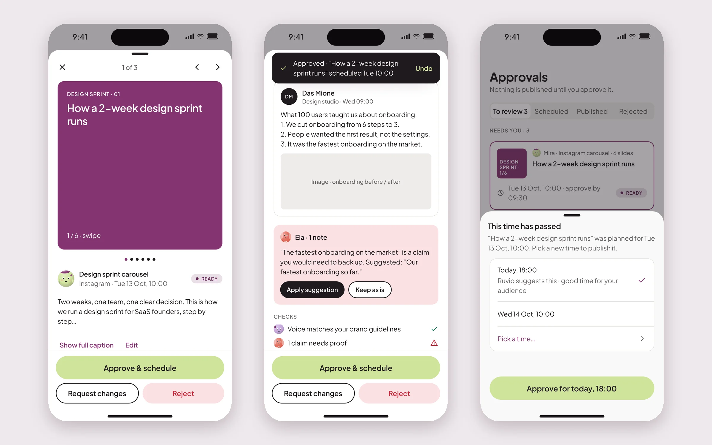
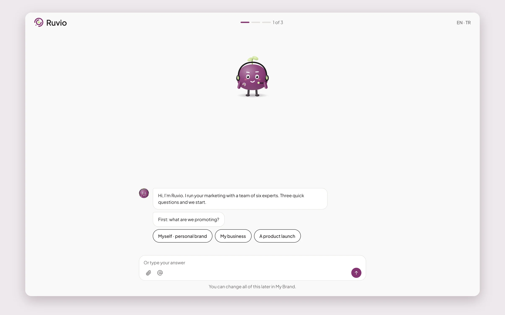
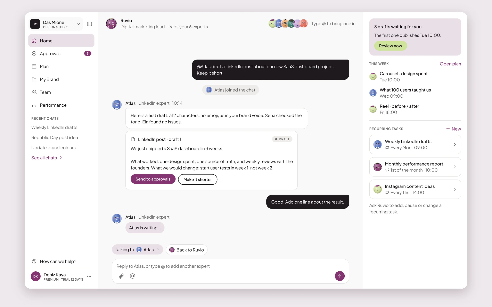
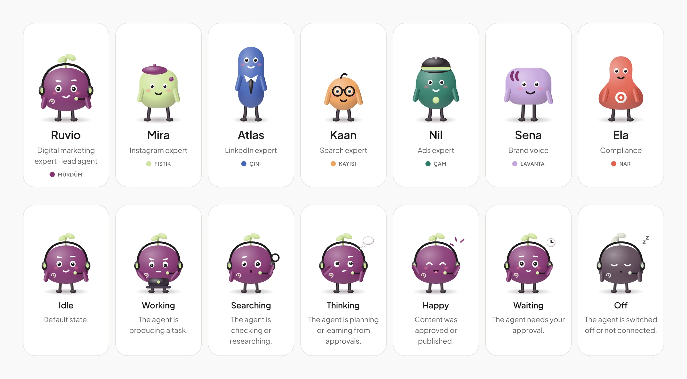
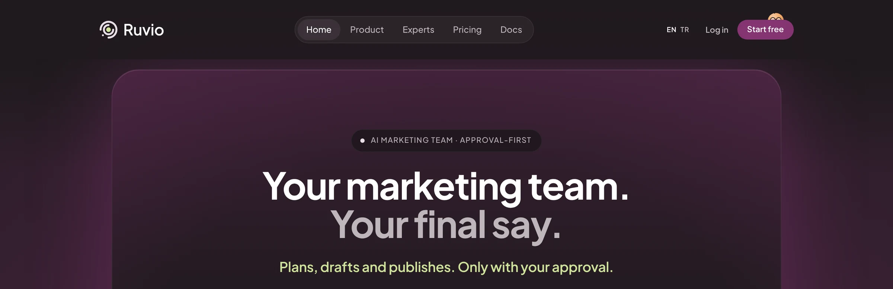
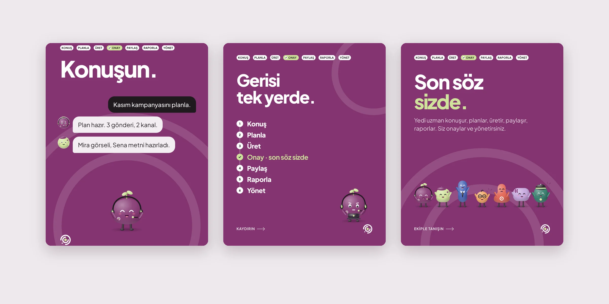

Your marketing team. Your final say.
Ruvio is an AI marketing team for small businesses: a lead agent and six specialists that plan, draft and publish across a customer's channels. The product only works if the customer trusts it with their name, so everything was built on one promise — nothing is published without your approval. As founding designer I shaped the product around that rule, then built the brand, the website, the animation and the Instagram launch on the same one.
Role
Founding designer — product, brand, website, motion, launch content
Surfaces
Web app · iPad · iPhone · marketing site · Instagram
Languages
English and Turkish from day one, in the product and the marketing
Focus
AI interaction design · Information architecture · Brand & character design · Motion
Tools
Figma · Figma Motion · Illustrator · Procreate · HTML/CSS prototypes
An agent that posts for you is a liability until it asks first
The pitch is easy to like: a marketing team that never sleeps, for a business that can't afford one. The problem is equally easy to see. A small business owner's Instagram account is their shopfront, and handing it to software that publishes on its own is the kind of risk nobody takes twice. Every competitor leads with speed. The decision that shaped everything here was to lead with control instead.
So the approval became the architecture, not a setting. The home screen, the weekly plan, the approvals queue and the phone all funnel into the same review surface, and the agents' job is to get a draft to that surface in good enough shape that approving it takes seconds. Fewer elements per screen, one primary action each, metrics kept out of the way until someone asks for them.

One review surface, everywhere
The fork: give each context its own way to approve — a tick on the home card, a detail page in the plan, a full editor in the queue — or build one review popup and make every path lead to it.
What I chose: one surface. Wherever a draft appears — Home, Plan, Approvals, the iPad, the iPhone — opening it shows the same thing: the post rendered as it will look on the channel, then the caption, the schedule and the checks. Preview first, because the customer is approving what their followers will see, not a form. The accent colour is reserved for Approve alone, so the eye finds the one action that matters. After approving, the next draft loads automatically with an undo window, and every card carries its deadline — “approve by 09:30” — so the queue reads as a to-do list rather than an inbox.
What it cost: the popup has to carry every content type — carousel, single image, reel, LinkedIn post — and every state of the compliance check, which made it the heaviest component in the file by some distance. The alternative was three lighter components that would have drifted apart within a quarter.

Onboarding as a conversation, three questions long
The fork: a proper set-up wizard — brand, audience, channels, tone, a website builder — or the minimum the agents need to produce a first plan.
What I chose: the minimum, delivered as a chat. What are we promoting, what's the goal and which channels, and a website link if there is one. Ruvio reads the link, sets the team up, and the customer lands on Home with a plan to react to. The profile gets finished later from a checklist, once the product has shown what it does. An earlier version asked people to build a website inside onboarding; it was cut, because a first-time user has not yet decided whether to trust the product with anything.
The chat format isn't a gimmick. The whole product is a conversation with a team, and onboarding is the first one. Answering by chip or by typing, seeing your own answers stay in the thread — that is also how the rest of Ruvio behaves.
What it cost: a thinner profile means the first plan is partly a guess, and the customer has to correct it. That correction happens in the same review surface as everything else, which is the point.


A team you talk to, not a model you prompt
The fork: one assistant that does everything, or a visible team with a lead and six specialists.
What I chose: the team. Ruvio leads and plans; Mira does Instagram, Atlas LinkedIn, Kaan search, Nil ads, Sena the brand voice and Ela compliance. Each expert has a name, a colour and a character, and typing @ in any chat brings them into the thread. It makes the division of labour legible — you know who wrote the LinkedIn draft and who checked it — and it gives every status a face: an agent that is working, searching or waiting looks like it.
The characters came with rules, because character work without rules becomes clutter. Seven expressions, one face system, avatars from 56 px down to 16, and a hard line on where a full-size character may appear. No characters in error, billing or legal messages: when money or the law is involved, the product drops the charm and speaks plainly.
What it cost: seven characters in seven expressions, at every avatar size, is a lot of brand to maintain. The expression sheet and the rules are what keep it from becoming a full-time job.
Compliance as a teammate, before the approval
The fork: let the customer be the only safety net, or put a check between the draft and the review.
What I chose: a check, with a name. Ela reads every draft for brand voice and for claims that need backing up — a discount without dates, “the fastest on the market” without a source — and leaves a note on the card. A draft with an Ela note can't be swept through with “Approve all ready”; it needs a human to open it. The note suggests a fix and lets the customer keep their own wording, so the check reads as a colleague rather than a gate.
This is what makes the one-tap approval honest. The customer can approve quickly because something has already read carefully.


The brand makes the same promise as the product
The fork: treat the website and social launch as a separate marketing job, or carry the product's one rule into everything the public sees.
What I chose: one rule, everywhere. The palette — Mürdüm, the deep plum, and Fıstık, the pistachio green — is the product's palette, and Fıstık means the same thing on the website as in the app: approval. The headline is the promise. The three pinned Instagram posts explain the product in the order the product works: talk to it, everything lands in one place, the last word is yours.
English and Turkish were built together rather than translated afterwards, in the product, on the site and in the social content, so Turkish string lengths and tone were a design input rather than a surprise.
What it cost: doing the brand, the site, the motion and the launch content as founding designer, alongside the product, means none of them got a specialist. What they got instead was consistency: nothing on the site promises something the product can't do.
A product whose promise you can see on every screen.
From a blank file to a product with a lead agent, six experts, onboarding, a weekly plan, the approvals queue and the review surface on web, iPad and iPhone — plus the brand, the character system, the website, the launch animation and the Instagram launch, in English and Turkish, all on one rule.
The test for every decision was the same: would a business owner trust this with their name? Every time the honest answer was “not yet”, the product asked first.